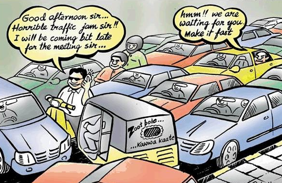

Traffic Management
According to Cambridge the number of vehicles moving along roads, or the amount of aircraft, trains, or ships moving along a route is called traffic .
Image Source:www.teluguone.com/comedy/content/traffic-jam-funny-cartoon-picture-657-28885.html
Reasons of traffic
Violation of rules.
Inadequate transport infrastructure and poor provision of transport services.
Increasing number of vehicles.
Source: www.newgeography.com/content/004504-traffic-congestion-world-10-worst-and-best-cities
Effects of traffic
Breaking of traffic laws
Road accidents
Pollution
Economic impact
Rules & regulations to avoid traffic
Make use of signs and symbols along side road
Make use of roundabouts
Use of flyovers or hover bridge
Source: www.indiamart.com/sairamenterprisesbengaluru/cautionary-sign-baords.html
Roundabout
A roundabout, also called a traffic circle, road circle, rotary, rotunda or island, is a type of circular intersection or junction in which road traffic flows almost continuously in one direction around a central island.
Avg. fuel used: 5ml
Avg. time used: 33sec